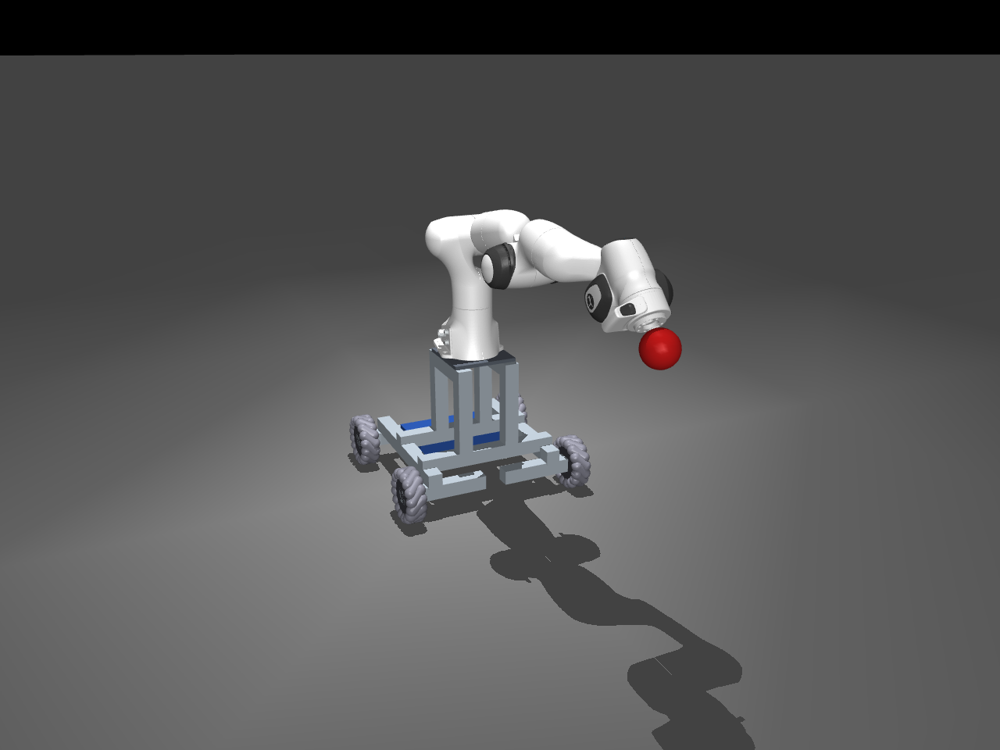
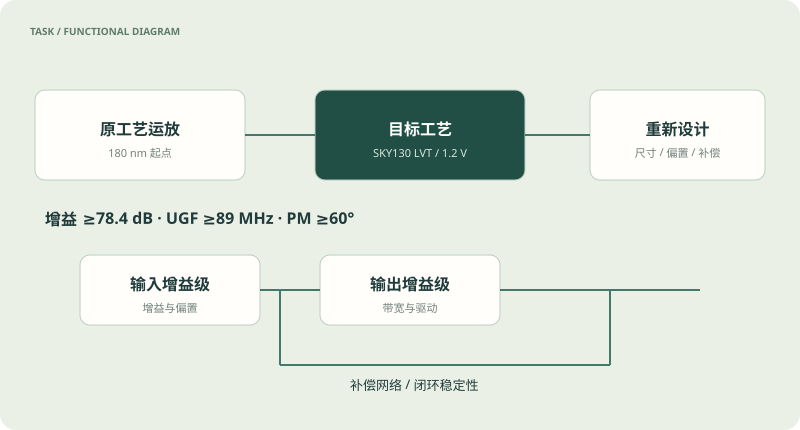
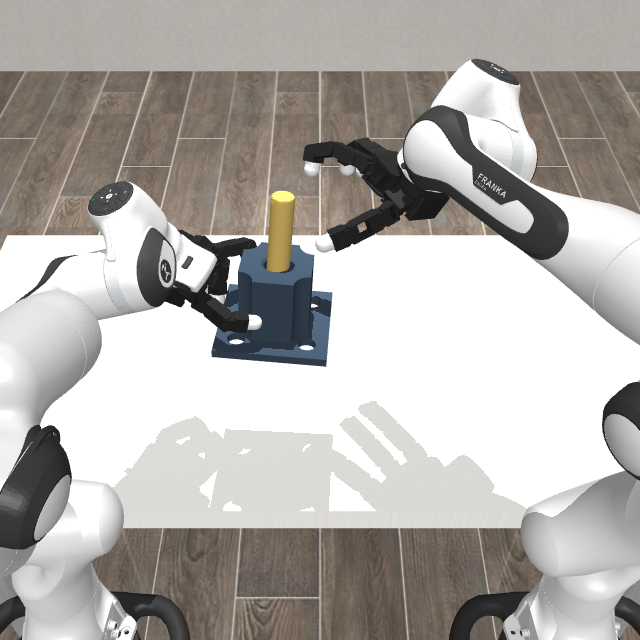
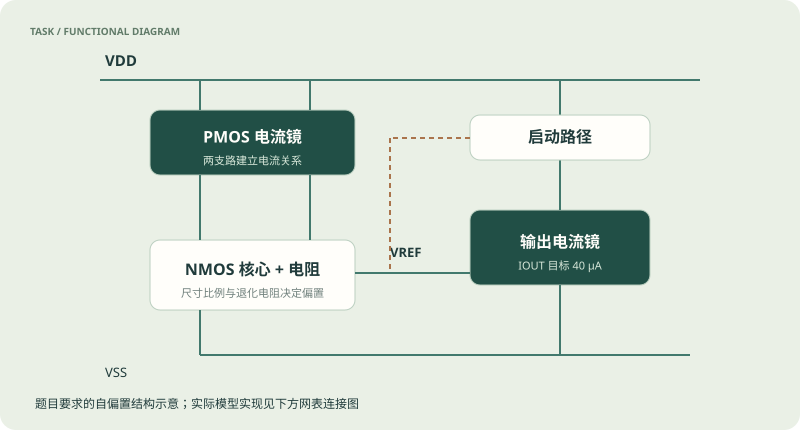
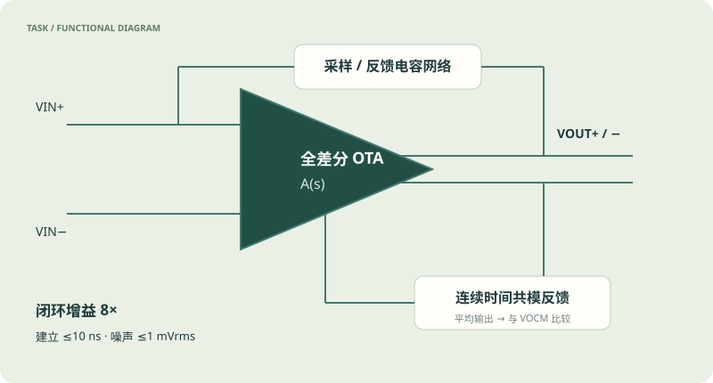

01 / MOBILE MANIPULATION真实提交 · MuJoCo 渲染 ↗D1 · 机器人与自主系统仿真 已完成实测
一套移动底盘，
适配三种机械臂。
↗从标准轮组、电池与铝型材出发，自主设计通用移动底盘与控制器。承载 Panda、UR5e、xArm7，完成两档负载下的货架目标到达与保持。
从工程目标，到经得起验证的仿真。
记录 Agent 如何设计仿真资产、开发控制策略，并在真实工程约束下接受独立评测。
每个案例保留题目、可视化、运行轨迹、分数与失败证据。

01 / MOBILE MANIPULATION真实提交 · MuJoCo 渲染 ↗从标准轮组、电池与铝型材出发，自主设计通用移动底盘与控制器。承载 Panda、UR5e、xArm7，完成两档负载下的货架目标到达与保持。

02 / ANALOG CIRCUIT PORTING题目功能图 · 实际电路 / 检查点 / 失败证据 ↗将运放迁移到 1.2 V SKY130 LVT，重新设计尺寸、偏置与补偿，同时满足八项性能约束。 查看 Docker 自主工具实测、器件连接图与两模型失败证据。

03 / DEXTEROUS BIMANUAL ASSEMBLY参考示范回放 · 非模型成绩 ↗双 Panda 与双 Allegro 灵巧手，从三路视觉和本体状态开发抓取、对齐、插装策略。每模型最多两小时开发，原版异步评测，保留 47 个完整回合的结果与失败证据。
 004 / ANALOG CIRCUIT DESIGN题目功能图 · 实际电路 / 检查点 / 失败证据 ↗
004 / ANALOG CIRCUIT DESIGN题目功能图 · 实际电路 / 检查点 / 失败证据 ↗设计误差放大器、调整管、反馈分压与内部补偿，在供电、温度和工艺变化中维持稳压。 查看 Docker 自主工具实测、器件连接图与两模型失败证据。

005 / ANALOG CIRCUIT DESIGN题目功能图 · 实际电路 / 检查点 / 失败证据 ↗从空白网表设计自偏置电流基准与启动路径，同时约束电流、参考电压、功耗、输出顺从性与失配。 查看 Docker 自主工具实测、器件连接图与两模型失败证据。

006 / ANALOG CIRCUIT DESIGN题目功能图 · 实际电路 / 检查点 / 失败证据 ↗自主设计全差分 OTA、偏置和共模反馈，使增益 8 的闭环在 PVT 与失配下保持准确、快速和稳定。 查看 Docker 自主工具实测、器件连接图与两模型失败证据。
没有匹配的案例。试试“LDO”“Beta”“OTA”“DexJoCo”，或切换“全部案例”查看现有实测记录。
● 当前为首批案例展示。各案例独立评分，不将不同任务的分数合并排名。
围绕工程对象与仿真尺度组织任务。
机器人本体、移动操作、装配策略、运动规划与闭环控制。
2 个公开案例机械零件与结构、电子器件与电路，以及可复用的原生工程资产。
4 个公开案例 · 模拟电路设计与迁移流动、传热、耦合物理场，以及边界条件与求解器配置。
案例规划中建筑冷热供应、室内环境、电力网络与综合能源系统。
案例规划中工艺过程、产线调度、生产物流与离散事件仿真。
案例规划中同时覆盖仿真资产设计与仿真环境中的算法开发。任务的难度来自工程约束、耦合性能和完整交付。
提供工程规格、标准组件与专业软件环境。
设计、编码、运行仿真、排错，形成可复用提交。
重载资产与策略，用约束、性能和失败记录解释分数。